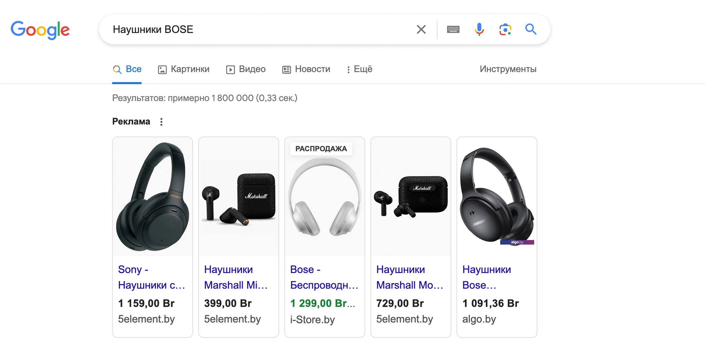
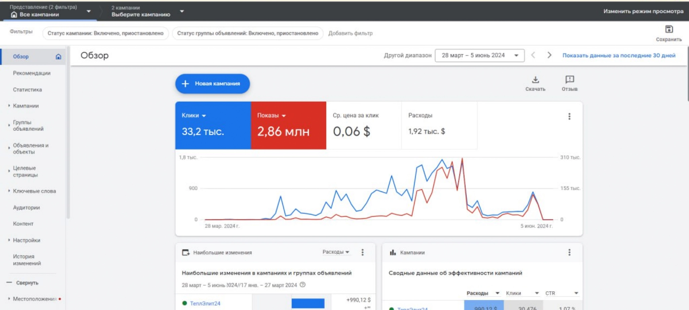
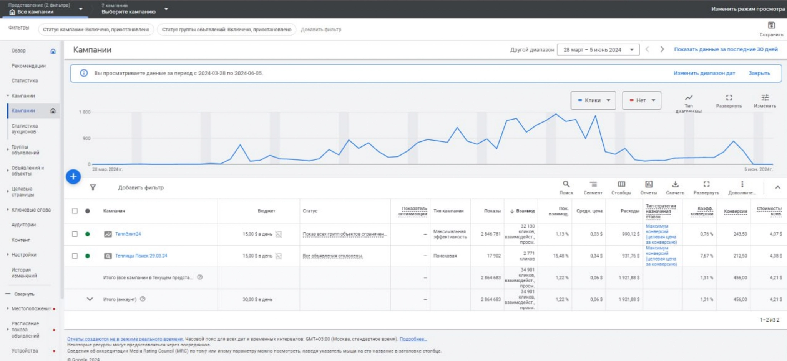
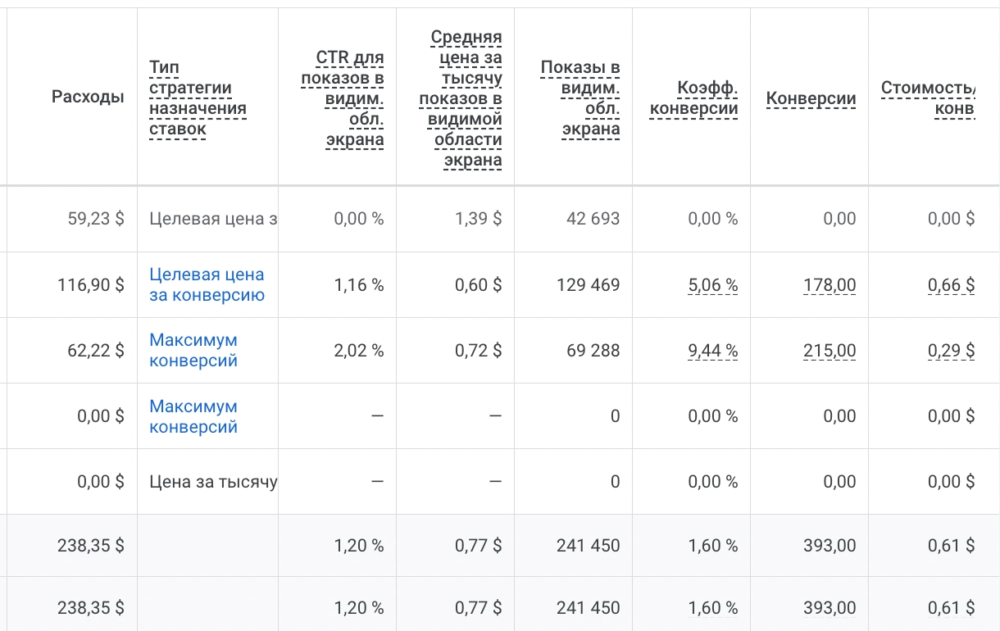
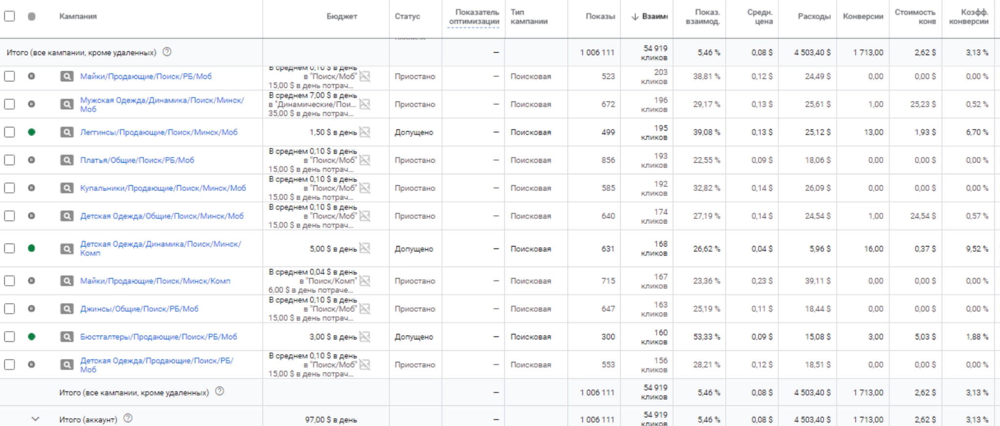
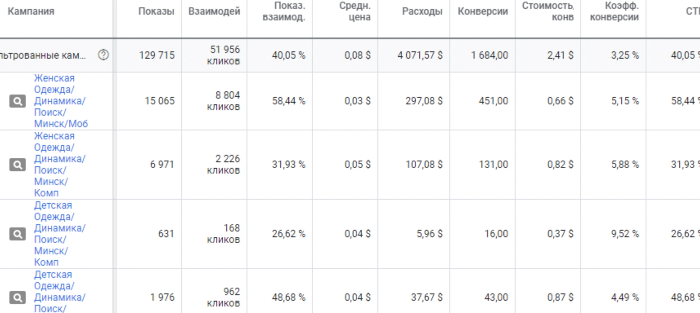

Что было сделано:
Был изучен проект, его продукты и товары. Проведен Анализ ЦА и конкурентов. разработан предварительный план по рекламе.
Провел сбор семантики и ключевых слов и минус слов по товарам и приступил к созданию рекламных кампаний.
Пример семантики:
1) Продающие запросы в поиске (связанным с покупкой товара, например: «Купить наушники», «Наушники цена» и т. д.);
2) Запрос на покупку наушников конкреного бренда: “Наушники BOSE”, “Беспроводные наушники SoundCore” и тд.
Также товары были загружены через Merchant Center для рекламы в товарных и торговых кампаниях.
Пример рекламных объявлений:

Далее детально прорабатывали рекламные кампании с учётом широкого товарного ассортимента. В объявлениях сразу указывали основные УТП, что выгодно выделяло на фоне конкурентов. Тестировали разные объявления: с упоминанием скидки, бесплатной доставки, рассрочки.
Что имеем:
Бюджет — 300−550 $ в месяц
Цена перехода на сайт — 0,05−0,09 $
Результаты за 2 месяца работы:
Рост числа заказов на 80%;
Увеличение объема выручки на 71%;
Окупаемость инвестиций (коэффициент ROI) — 530−650%;
Стоимость заявки менее 3 $;
Существенный рост объёма продаж и прибыли;
Что было сделано:
Был изучен проект. Проведен Анализ ЦА и конкурентов. Проанализированы основные ключевые запросы и ставки по рекламе. Разработан и презентован план по рекламе клиенту. Созданы и запущены рекламные кампании.
Скриншоты из рекламного кабинета


Результаты:
За 2,5 месяца работы было получено:
33,2 тысячи переходов на сайт, CPC= 0,06 $. Бюджет на рекламу составил 1920$.
Было получено 456 заявок со средней стоимостью 4,21 $
Клиентов - 136 ( конверсия 29%). Стоимость клиента 14,12 $.
Выручка составила более 20000$.
Исходные данные: компания запускает таргетированную рекламу и недовольна результатами по качеству и количесвту дошедших людей на сеансы оздоровительного массажа.
Задача- привлечь аудиторию в салон для прохождения курса аппаратного массажа.
Что было сделано:
Был изучен проект и структура работы и взаимодействия с клиентами. Проведен Анализ ЦА и конкурентов. разработан предварительный план по рекламе и презентован клиенту.
Результаты за 2 месяца работы:

Было получено 393 регистрации на курс.
Средняя цена заявки - 0,61 $
Рекламный бюджет 238$
Задача- запустить окупаемую рекламу с окупаемостью (ROAS) - не меньше 400%
Что было сделано:
Был изучен проект и его продукция и товары. Проведен Анализ ЦА и конкурентов. разработан предварительный план по рекламе.
Первым этапом в работе по проекту была настроена Расширенная электронная торговля в Google Analytics, а также созданы списки аудиторий ремаркетинга. Первое было необходимо для уверенности в корректном расчете эффективности рекламных кампаний. Второе же — для возможности задействовать механики возврата посетителей, которые совершили касание с сайтом, но не оформили покупку.
Скриншоты из рекламного кабинета:


Результаты Рекламной кампании
Рекламный бюджет- 2425 $
Кликов по рекламе - 30776
CPC - 0,08$
Конверсии ( оформление заказа)- 1033
CPA - 2,35 $
Средний чек- 37$